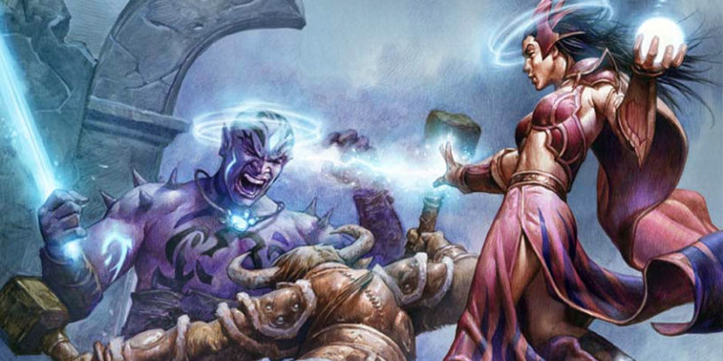

Eberron : Dracogrammes
Un dracogramme [dragonmark] est un symbole enchanté qui apparaît sur la peau. Cette marque est une source de pouvoir magique qui est aussi capable d'augmenter la capacité du porteur à réaliser certaines tâches. À Eberron, chaque marque est liée à une lignée bien spécifique. Les familles qui portent ces marques forment les maisons à dracogrammes, de puissantes forces qui dominent différents secteurs d'activités du monde. Tous les membres d'une même famille ne possèdent pas forcément de dracogramme ; de la même façon, le fait de posséder un dracogramme ne donne pas un statut particulier au sein de la maison. Quand vous créez un personnage porteur de dracogramme, l'historique du personnage peut vous aider à établir le type de relation qu'il a avec sa maison. Un personnage d'origine noble viendra peut-être des membres dirigeants de la famille. Un artisan de guilde ou un artiste pourront travailler dans une des guildes de la maison. Un criminel aura peut-être été exilé par sa famille, alors qu'un enfant des rue pourrait être un orphelin n'ayant jamais su qu'il avait des liens avec une des familles à dracogrammes.
Créer un personnage à dracogramme
Les dracogrammes sont associés à une race et sont représentés par un ensemble de races et de sous-races.
- Pour les humains, le dracogramme est une race alternative qui remplace les traits normaux associés à cette race.
- Pour les demi-elfes et les demi-orcs, le dracogramme est aussi une race alternative. Vous gardez certaines des caractéristiques de la race d'origine et remplacez les autres par les traits associés à la marque.
- Pour les nains, les elfes, les gnomes et les halfelins, le dracogramme remplace la sous-race. Ainsi, si vous faites un personnage elfe, vous pouvez choisir de prendre la marque de l'Ombre au lieu de la sous-race elfe des bois ou haut-elfe.
Il existe deux options additionnelles en relation avec les dracogrammes. Quand votre personnage à dracogramme gagnera de l'expérience, vous pourrez prendre le don Dracogramme majeur qui représentera l'augmentation de puissance de votre dracogramme. De même, le don Dracogramme aberrant donnera à un personnage des pouvoirs magiques certes limités, mais très dangereux. Les dracogrammes aberrants ne sont pas liés à l'une ou l'autre des maisons à dracogrammes et peuvent être pris par tous les personnages.
Dés d'intuition
Un dracogramme améliore votre capacité à réaliser un certain type de tâche. La marque de la Découverte aiguise vos sens et améliore votre perception, tandis que la marque de la Création guide vos mains lorsque vous utilisez des outils d'artisan. Chaque dracogramme possède un trait qui vous accorde le droit de lancer un dé d'intuition, un d4, quand vous réalisez un jet de caractéristique avec une compétence ou un outil particulier. Vous ajoutez alors le résultat du dé au jet de caractéristique. Vous n'avez pas besoin de maîtriser la compétence ou l'outils pour gagner cet avantage.
Des dons, des objets magiques ou d'autres avantages peuvent améliorer votre dé d'intuition. Ceci augmentera le type de dé que vous lancerez d'une taille (d6, d8 et d10) jusqu'à un maximum d'un d10. Vous ne pouvez lancere qu'un seul dé d'intuition par jet ; si vous recevez d'autres dés d'intuition par d'autres sources, augmentez le dé d'une taille et lancez celui-ci. Par exemple, si un trait de dracogramme et un don donnent tous deux des dés d'intuition pour les jets de Dextérité (Discrétion), vous lancez 1d6 au lieu de 1d4. Trois occurrences augmenteront donc votre dé d'intuition à 1d8, et ainsi de suite.
Aspect d'un dracogramme
Un dracogramme est un signe distinctif qui apparaît sur la peau. Il existe douze dracogrammes connus, chacun ayant une forme et un pouvoir unique. Un dracogramme peut apparaître sur n'importe quelle partie du corps. Un demi-elfe pourra avoir une marque de Détection sur un œil, alors qu'un autre l'aura sur la paume de sa main. Les dracogrammes sont constitués de formes vives bleues ou violettes qui semblent miroiter. Quand vous les utilisez, ils deviennent chauds au toucher et peuvent briller (mais ils ne produisent pas suffisamment de lumière pour être utilisés comme une source d'éclairage). Un dracogramme ne peut être enlevé, même si le membre qui le porte est coupé, la marque se manifestant alors sur une autre partie du corps du porteur. Toutes les dracogrammes ont le même aspect au début, mais un dracogramme va gagner en taille et en complexité si le personnage prend le don Dracogramme majeur ou si la marque est liée à une capacité de classe. Toutefois, si les dracogrammes partagent en général un aspect assez similaire, votre dracogramme peut avoir une qualité particulière. Si vous souhaitez explorer cet aspect, lancez un 1d6 dans la table suivante.
| 1d6 | Bizarreries |
| 1 | Votre dracogramme est inhabituellement petit ou exceptionnellement grand. |
| 2 | Votre dracogramme se déplace lentement le long de votre corps. |
| 3 | Votre dracogramme luit énormément quand vous l'utilisez. |
| 4 | Votre dracogramme vous picote quand quelqu'un qui porte la même marque est proche de vous. |
| 5 | Votre dracogramme vous picote quand vous l'utilisez. |
| 6 | Votre dracogramme a une coloration inhabituelle mais une forme normale. |
Marque de la Détection
La marque de la Détection est le fantasme de tous les investigateurs. Elle aiguise les capacités d'observation et d'intuition, permettant à son porteur de découvrir des connexions entre les faits et d'interpréter les indices que d'autres auraient manqués. En puisant dans ses pouvoirs, le porteur peut détecter les poisons et étudier les énergies magiques.
Traits de la marque de la Détection
La marque de la Détection se manifeste uniquement sur les demi-elfes. Si votre personnage possède la marque de la Détection, ces traits remplacent les traits Augmentation de caractéristiques, Polyvalence et Langues décrits dans le Manuel des Joueurs.
Augmentation de caractéristiques. Votre Intelligence et votre Charisme augmentent de 1. De plus, vous pouvez augmenter une autre caractéristique de votre choix de 1.
Intuition déductive. Quand vous faites un jet d'Intelligence (Investigation) ou Sagesse (Intuition), vous pouvez lancer un dé d'intuition, un d4, et ajouter le résultat au jet de caractéristique.
Sens du danger. Vous pouvez lancer les sorts détection de la magie et détection du poison et des maladies, mais seulement en tant que rituels. L'Intelligence est votre caractéristique d'incantation pour ces sorts.
Langages. Vous pouvez parler, lire et écrire le commun et l'elfique.
Marque de la Découverte
La marque de la Découverte aiguise les sens de celui qui la porte, guidant le chasseur vers sa proie. À Eberron, elle est apparue la première fois dans les Marches de l'ombre, là où les clans de chasseurs l'utilisent afin d'atteindre leurs proies. La marque a aidé à réunir les humains et les orcs dans les Marches et à permettre le développement de la Maison Tharashk dans les Cinq Nations.
Traits de la marque de la Découverte
La marque de la Découverte se manifeste uniquement sur les demi-orcs. Si votre personnage possède la marque de la Découverte, ces traits remplacent les traits Augmentation de caractéristiques, Menaçant, Endurance implacable et Attaques sauvages décrits dans le Manuel des Joueurs. Malgré leurs origines orcs, les héritiers de la marque de la Découverte ressemblent plus souvent à leur parent humain en apparence et en tempérament. Quand vous créez votre personnage, vous devez décider si votre ascendance orc est évidente ou subtile.
Augmentation de caractéristiques. Votre Force et votre Sagesse augmentent de 1. De plus, vous pouvez augmenter une autre caractéristique de votre choix de 1.
Intuition du chasseur. Votre marque a aiguisé vos sens et vous aide à trouver votre proie. Quand vous faites un jet de Sagesse (Perception) ou de Sagesse (Survie), vous pouvez lancer un dé d'intuition, un d4, et ajouter le résultat au jet de caractéristique.
Marquer la proie. Par une action bonus, vous pouvez choisir une créature que vous pouvez voir dans un rayon de 9 mètres autour de vous. La cible est marquée dans votre esprit jusqu'à ce qu'elle meure ou que vous utilisiez ce trait à nouveau. Vous pouvez, sinon, marquer votre cible dans votre esprit si vous réussissez un jet de Sagesse (Survie) lorsque vous la pistez. Lorsque vous pistez votre proie, vous doublez le résultat de votre dé d'inspiration. Quand votre proie marquée est à 18 mètres ou moins de vous, vous connaissez précisément sa position. Vos attaques contre elle ignorent les abris partiels. Si vous ne pouvez voir la cible lorsque vous l'attaquez, votre incapacité à voir n’entraîne pas de désavantage aux jets d'attaques. De même, votre proie ne gagne aucun avantage aux jets d'attaque lorsqu'elle vous attaque depuis une position cachée ou si elle est invisible. Une fois que vous avez utilisé ce trait, vous ne pouvez plus l'utiliser avant d'avoir terminé un repos court ou long.
Voix de la nature. Quand vous atteignez le niveau 3, vous gagnez la capacité de lancer le sort localisation d'animaux ou de plantes, mais seulement en tant que rituel.
Marque du Dressage
La marque du Dressage donne à son porteur une connexion primitive avec les animaux et le monde naturel en général, accordant le pouvoir de calmer et de convaincre les bêtes. Ceci ne concerne pas que les animaux naturels ; la marque permet de guider un hippogriffe aussi facilement qu'un cheval.
Traits de la marque du Dressage
La marque du Dressage se manifeste uniquement sur les humains. Si votre personnage possède la marque du Dressage, ces traits remplacent le trait Augmentation de caractéristiques décrit dans le Manuel des Joueurs.
Augmentation de caractéristiques. Votre Dextérité et votre Sagesse augmentent de 1. De plus, vous pouvez augmenter une autre caractéristique de votre choix de 1.
Intuition sauvage. Quand vous faites un jet de Sagesse (Dressage) ou d'Intelligence (Nature), vous pouvez lancer un dé d'Intuition, un d4, et ajouter le résultat au jet de caractéristique.
Dresseur expert. Vous pouvez utiliser l'action Aider pour aider un compagnon animal allié ou une monture à 9 mètres ou moins de vous, au lieu de 1,50 mètre.
Connexion primitive. Vous gagnez la capacité de lancer le sort amitié animale une fois avec ce trait et regagnez la capacité de le lancer quand vous terminez un repos court ou long. La Sagesse est votre caractéristique d'incantation pour ce sort.
Aussi grands soient-ils. Quand vous lancez un sort qui affecte seulement les animaux, il affecte aussi les monstruosités qui ont une Intelligence de 3 ou moins.
Marque de la Guérison
Un halfelin porteur de la marque de la Guérison peut sauver une vie d'un simple contact, restaurant la vitalité et l'envie de vivre. Associée à la médecine traditionnelle, la marque aide son porteur à déterminer la nature des maladies et des affections, et de trouver le meilleur traitement. Augmentée par des objets fabriqués à partir de dracolithes (aussi appelés fragments de dragon), la marque peut même ramener les morts à la vie.
Traits de la marque de la Guérison
La marque de la Guérison se manifeste uniquement sur les halfelins. Si votre personnage possède la marque de la Guérison, celle-ci est considérée comme une sous-race d'halfelin.
Augmentation de caractéristiques. Votre Sagesse augmente de 1.
Intuition médicale. Quand vous faites un jet de Sagesse (Médecine), vous pouvez lancer un dé d'intuition, un d4, et ajouter le résultat au jet de caractéristique.
Toucher guérisseur. Par une action, vous pouvez puiser dans la puissance de votre dracogramme pour dépenser un de vos dés de vie et régénérer votre santé ou celle d'une créature que vous touchez. Lancer le dé, additionnez votre bonus de Sagesse, et la créature regagne un nombre de points de vie égal au total. Une fois que vous avez utilisé ce trait, vous ne pouvez plus l'utiliser avant d'avoir terminé un repos court ou long.
Bénédiction de Jorasco. Vous connaissez le sort mineur stabilisation. La Sagesse est votre caractéristique d'incantation pour ce sort.
Marque de l'Hospitalité
S'il n'est pas toujours couvert d'or, un halfelin porteur de la marque de l'Hospitalité est sûr d'être riche en amis. La magie de la marque permet au porteur de garder un lieu propre, de chauffer, refroidir ou assaisonner la nourriture. Mais il permet aussi au porteur de se mettre en relation avec d'autres personnes et de calmer les esprits échauffés, un outil très utile mais qui peut produire l'effet contraire si on en abuse.
Traits de la marque de l'Hospitalité
La marque de l'Hospitalité se manifeste uniquement sur les halfelins. Si votre personnage possède la marque de l'Hospitalité, celle-ci est considérée comme une sous-race d'halfelin.
Augmentation de caractéristiques. Votre Charisme augmente de 1.
Charme de l'aubergiste. Vous connaissez les sorts mineurs amis et prestidigitation. Le Charisme est votre caractéristique d'incantation pour ce sort.
Bon accueil jour et nuit. Quand vous faites un jet de Charisme (Persuasion) ou un jet de caractéristique qui implique un kit de brasseur ou des ustensiles de cuisine, vous pouvez lancer un dé d'intuition, un d4, et ajouter le résultat au jet de caractéristique.
Marque de la Création
La marque de la Création guide son porteur dans le processus de fabrication d'objet manufacturé. Les porteurs de la marque peuvent réparer des objets cassés par un simple contact, et ont toujours sur eux un objet magique mineur sur lequel ils travaillent. Si un artificier ou un magicien pourront tirer le meilleur parti des pouvoirs de cette marque, n'importe qui peut trouver une utilité à une lame enchantée.
Traits de la marque de la Création
La marque de la Création se manifeste uniquement sur les humains. Si votre personnage possède la marque de la Création, ces traits remplacent le trait Augmentation de caractéristiques décrit dans le Manuel des Joueurs.
Augmentation de caractéristiques. Votre Intelligence et votre Dextérité augmentent de 1. De plus, vous pouvez augmenter soit l'Intelligence soit la Dextérité de 1.
Intuition de l'artisan. Quand vous faites un jet de caractéristique avec des outils d'artisan, vous pouvez lancer un dé d'intuition, un d4, et ajouter le résultat au jet de caractéristique.
Don de l'artisan. Vous connaissez le sort mineur réparations. Vous gagnez de plus la maîtrise d'un type d'outils d'artisan.
Artisanat magique. Vous pouvez créer un objet magique temporaire à partir d'un objet normal. Choisissez un sort mineur dans la liste de sorts de magicien et définissez l'objet qui lui sera connecté. Aussi longtemps que vous posséderez cet objet, vous connaîtrez ce sort mineur. À la fin d'un repos long, vous pouvez remplacer cet objet par un autre et choisir un nouveau sort mineur de la liste de sorts de magicien. L'Intelligence est votre caractéristique d'incantation pour ce sort mineur.
Forge-sort. Vous pouvez passer une minute à tisser un enchantement temporaire sur une pièce d'armure ou une arme non magique. Durant toute l'heure qui suit, cet objet devient magique et octroie un bonus de +1 à la CA si c'est une armure ou un bonus de +1 à l'attaque et aux dégâts si c'est une arme. Une fois que vous avez utilisé ce trait, vous ne pouvez plus l'utiliser avant d'avoir terminé un repos long.
Marque du Passage
La marque du Passage contrôle le mouvement, permettant au porteur de bouger avec une vitesse inouïe et une grande adresse. Courir, sauter, grimper, la marque du Passage améliore tous les types de mouvement. Le porteur de la marque peut même se glisser à travers l'espace, sautant d'un endroit à un autre en un clignement d'œil.
Traits de la marque du Passage
La marque du Passage se manifeste uniquement sur les humains. Si votre personnage possède la marque du Passage, ces traits remplacent le trait Augmentation de caractéristiques décrit dans le Manuel des Joueurs.
Augmentation de caractéristiques. Votre Dextérité augmente de 2. De plus, vous pouvez augmenter une autre caractéristique de votre choix de 1.
Vitesse du coursier. Votre vitesse de base passe à 12 mètres.
Mouvement intuitif. Quand vous faites un jet de Force (Athlétisme) ou un jet de caractéristique pour conduire ou contrôler un véhicule terrestre, vous pouvez lancer un dé d'intuition, un d4, et ajouter le résultat au jet de caractéristique.
Élégance d'Orien. À votre tour, vous pouvez dépenser une quantité de mouvement égale à la moitié de votre vitesse pour activer ce trait. Une fois activée, l'Élégance d'Orien fait que vous ne provoquez pas d'attaque d'opportunité pour le reste du tour.
Passage partagé. Vous pouvez utiliser votre action bonus pour vous téléporter jusqu'à une distance égale à votre vitesse dans un espace inoccupé que vous pouvez voir. Vous pouvez amener une créature avec vous, de votre taille ou plus petite, qui transporte du matériel jusqu'à sa capacité de charge maximale. La créature doit être à 1,50 mètre ou moins de vous. Une fois que vous avez utilisé ce trait, vous ne pouvez plus l'utiliser avant d'avoir terminé un repos long.
Marque de l'Écriture
La marque de l'Écriture est liée à la communication, à la fois écrite et parlée. Un gnome qui porte cette marque peut ressentir les mots comme s'il s'agissait de créatures vivantes s'escrimant à faire comprendre leur sens. Cette marque donne accès à une vaste gamme de dons. Elle permet de traduire les langues, mais permet aussi de parler aux autres à grande distance et de transcrire leurs mots où qu'ils soient.
Traits de la marque de l'Écriture
La marque de l'Écriture se manifeste uniquement sur les gnomes. Si votre personnage possède la marque de l'Écriture, celle-ci est considérée comme une sous-race de gnome.
Augmentation de caractéristiques. Votre Charisme augmente de 1.
Scribe compétent. Vous maîtrisez les outils de calligraphie ainsi que le kit de contrefaçon. Quand vous faites un jet de caractéristiques pour l'un ou l'autre de ces outils, vous pouvez lancer un dé d'intuition, un d4, et ajouter le résultat au jet de caractéristique.
Perspicacité du scribe. Vous pouvez lancer le sort compréhension des langages une fois avec ce trait, et vous regagnez la capacité de l'utiliser à nouveau après avoir terminé un repos long. L'Intelligence est votre caractéristique d'incantation pour ce sort.
Murmures du vent. Vous connaissez le sort mineur message. L'Intelligence est votre caractéristique d'incantation pour ce sort.
Langue supplémentaire. Vous pouvez parler, lire et écrire une langue supplémentaire de votre choix.
Marque de la Sentinelle
La marque de la Sentinelle alerte et protège. Elle renforce les sens et les réflexes, permettant à un héritier de réagir face aux dangers avec une vitesse inouïe. Que ce soit sur un champ de bataille ou dans une salle de bal, le porteur de la marque de la Sentinelle est toujours prêt à faire face au danger.
Traits de la marque de la Sentinelle
La marque de la Sentinelle se manifeste uniquement sur les humains. Si votre personnage possède la marque de la Sentinelle, ces traits remplacent le trait Augmentation de caractéristiques décrit dans le Manuel des Joueurs.
Augmentation de caractéristiques. Votre Force et votre Sagesse augmentent de 1. De plus, vous pouvez augmenter une autre caractéristique de votre choix de 1.
Intuition de la sentinelle. Quand vous faites un jet d'Initiative ou de Sagesse (Perception), vous pouvez lancer un dé d'intuition, un d4, et ajouter le résultat au jet de caractéristique.
Bouclier de la sentinelle. Vous connaissez le sort mineur protection contre les armes. Vous gagnez la capacité de lancer le sort bouclier une fois avec ce trait et regagnez la capacité de le lancer quand vous terminez un repos court ou long.
Gardien vigilant. Par une action, vous pouvez désigner un allié que vous pouvez voir comme étant votre pupille. Vous avez un avantage aux jets de Sagesse (Intuition) et de Sagesse (Perception) quand il s'agit de repérer les dangers qui menacent votre pupille. De plus, quand vous êtes à 1,50 mètre ou moins de votre pupille et que ce dernier est la cible d'une attaque dont vous pouvez voir l'origine, vous pouvez, en utilisant votre réaction, changer de place avec votre pupille et devenir alors la cible de l'attaque.
Marque de l'Ombre
La marque de l'Ombre permet à un elfe de tisser des illusions à partir de l'ombre, créant images et sons pour détourner l'attention ou divertir. La marque permet aussi à son porteur de manipuler les ombres, faisant d'elles une matière malléable qui permet d'éviter les détections, voire même de disparaître à la vue de tous. C'est un outil très pratique pour un amuseur, un espion ou un assassin ; chaque elfe qui porte la marque devra choisir la voie qu'il veut suivre.
Traits de la marque de l'Ombre
La marque de l'Ombre se manifeste uniquement sur les elfes. Si votre personnage possède la marque de l'Ombre, celle-ci est considérée comme une sous-race d'elfe.
Augmentation de caractéristiques. Votre Charisme augmente de 1.
Talent inné. Vous maîtrisez un instrument de musique ou la compétence Représentation.
Don des ombres. Quand vous faites un jet de Charisme (Représentation) ou de Dextérité (Discrétion), vous pouvez lancer un dé d'intuition, un d4, et ajouter le résultat au jet de caractéristique.
Façonner les ombres. Vous connaissez le sort mineur illusion mineure. Le Charisme est votre caractéristique d'incantation pour ce sort.
Glisser dans les ombres. Vous pouvez utiliser l'action Se cacher en action bonus, même si vous n'avez aucun abri ou si vous êtes sous surveillance. Que l'action soit réussie ou non, une fois que vous avez utilisé cette capacité, vous devez terminer un repos court ou long avant de pouvoir l'utiliser à nouveau.
Marque de la Tempête
Le vent et l'eau sont toujours les amis d'un demi-elfe porteur de la marque de la Tempête. Le vent les relève quand ils tombent et ils sont capables de nager à des vitesses incroyables. Ceux qui possèdent le don Dracogramme majeur et des focaliseurs à base de dracolithes peuvent faire appel à des pouvoirs encore plus redoutables, modifiant la météo ou permettant de faire appel au pouvoir de l'orage.
Traits de la marque de la Tempête
La marque de la Tempête se manifeste uniquement sur les demi-elfes. Si votre personnage possède la marque de la Tempête, ces traits remplacent les traits Augmentation de caractéristiques, Polyvalence et Langues décrits dans le Manuel des Joueurs.
Augmentation de caractéristiques. Votre Dextérité et votre Charisme augmentent de 1. De plus, vous pouvez augmenter une autre caractéristique de votre choix de 1.
Loup de mer. Votre vitesse de base est de 9 mètres, et vous gagnez une vitesse de natation de 9 mètres.
Intuition des artisans du vent. Quand vous faites un jet de Dextérité (Acrobaties) ou un jet de caractéristique pour conduire ou contrôler un véhicule aquatique ou aérien, vous pouvez lancer un dé d'intuition, un d4, et ajouter le résultat au jet de caractéristique.
Bénédiction de la tempête. Vous gagnez la résistance aux dégâts de foudre.
Vents contraires. Vous connaissez le sort mineur rafale. À partir du niveau 3, vous pouvez lancer le sort bourrasque une fois avec ce trait, et vous regagnez la capacité de l'utiliser à nouveau après avoir terminé un repos long.
Langages. Vous pouvez parler, lire et écrire le commun et l'elfique.
Rafale
niveau 0 - transmutation
Temps d'incantation : 1 action
Portée : 9 mètres
Composantes : V, S
Durée : instantanée
Vous saisissez l'air et l'obligez à créer un des effets suivants à un point que vous pouvez voir à portée :
- Une créature de taille M ou plus petite que vous choisissez doit réussir un jet de sauvegarde de Force ou bien être repoussée de 1,50 mètre de vous.
- Vous créez une petite explosion d'air capable de bouger un objet qui n'est ni tenu ni porté et qui ne pèse pas plus que 2,5 kg. L'objet est repoussé de 3 mètres. Il n'est pas poussé avec assez de force pour faire des dégâts.
- Vous créez un effet sensoriel inoffensif qui utilise l'air, comme provoquer le bruissement de feuilles, faire claquer des volets ou faire onduler des vêtements dans une brise.
Marque de la Protection
La marque de la Protection permet à ses porteurs de protéger des objets de grande valeur. En utilisant sa marque, un nain peut lancer des protections et sceller des portails à l'aide de forces mystiques. Elle donne en plus à son porteur une compréhension intuitive des serrures et mécanismes utilisés pour protéger et sceller. La décision que chaque héritier de la maison doit prendre est de savoir s'il veut mettre les affaires des autres à l'abri, ou s'il préfère crocheter des serrures pour prendre ce qui est protégé par d'autres.
Traits de la marque de la Protection
La marque de la Protection se manifeste uniquement sur les nains. Si votre personnage possède la marque de la Protection, celle-ci est considérée comme une sous-race de nain.
Augmentation de caractéristiques. Votre Dextérité et votre Intelligence augmentent de 1.
Maître serrurier. Quand vous faites un jet d'Intelligence (Histoire), d'Intelligence (Investigation) ou un jet de de caractéristique avec les outils de voleur sur des serrures ou des pièges, vous pouvez lancer un dé d'intuition, un d4, et ajouter le résultat au jet de caractéristique.
Sceaux et protections. Vous pouvez utiliser votre marque pour lancer le sort alarme, mais uniquement en tant que rituel. À partir du niveau 3, vous pouvez lancer le sort verrou magique une fois avec ce trait, et vous regagnez la capacité de l'utiliser à nouveau après avoir terminé un repos long. L'Intelligence est votre caractéristique d'incantation pour ce sort.
Nouveau don : Dracogramme majeur
Le don Dracogramme Majeur représente l'évolution naturelle d'un dracogramme, un accroissement exponentiel à la fois de la taille du dracogramme et des pouvoirs qu'il accorde. Seule une fraction des héritiers des familles de dracogrammes peuvent développer un Dracogramme majeur. Les pouvoirs qu'ils possèdent sont bien plus puissants que la vaste majorité de la magie qui a servi à fonder l'économie magique d'Eberron. Téléportation ou communication instantanée au travers de vastes distances, ces services sont rares, impressionnants et propres aux maisons à dracogrammes.
Dracogramme majeur
Prérequis : Niveau 8, le personnage doit posséder un dracogramme
Votre dracogramme a grandi en taille et en puissance. Ce don améliore le dracogramme présent sur votre corps, et les avantages gagnés dépendent du type de dracogramme que vous possédez. Un Dracogramme majeur prodigue les avantages suivants :
- Le type de dé que vous lancez comme dé d'intuition avec votre dracogramme augmente d'une taille.
- Augmentez une de vos caractéristiques de 1, sans dépasser 20. Les caractéristiques que vous pouvez augmenter dépendent de votre dracogramme, comme décrit dans le tableau ci-dessus.
- Vous apprenez un ensemble de sorts que vous pouvez lancer une fois sans dépenser d'emplacement de sort ou de composantes matérielles. La liste des sorts, la caractéristique utilisée pour les lancer et le type de repos nécessaire pour regagner la capacité de lancer ces sorts sont décrits dans le tableau ci-dessous
| Dracogrammes | Caractéristiques augmentables | Sorts | Caractéristique d'incantation | Type de repos requis |
| Détection | Intelligence ou Charisme | voir l'invisible, vision suprême | Intelligence | Long |
| Découverte | Dextérité, Force ou Sagesse | sens de l'orientation, localisation de créatures | Sagesse | Long |
| Dressage | Dextérité ou Sagesse | sens animal, domination de bête | Sagesse | Long |
| Guérison | Dextérité ou Sagesse | restauration supérieure, mot de guérison de groupe | Sagesse | Long |
| Hospitalité | Charisme ou Dextérité | manoir somptueux de Mordenkainen, sanctuaire | Charisme | Long |
| Création | Dextérité ou Intelligence | création, fabrication | Intelligence | Long |
| Passage | Dextérité ou Constitution | clignotement, cercle de téléportation | Constitution | Long |
| Écriture | Intelligence ou Charisme | communication à distance, langues | Intelligence | Court ou long |
| Sentinelle | Force ou Sagesse | duel forcé, lien de protection | Sagesse | Court ou long |
| Ombre | Charisme ou Dextérité | double illusoire, antidétection | Charisme | Long |
| Tempête | Charisme ou Dextérité | contrôle du climat, contrôle des vents | Charisme | Long |
| Protection | Dextérité ou Intelligence | glyphe de protection, déblocage, coffre secret de Léomund * | Intelligence | Long |
* Pour lancer coffre secret de Léomund par l'intermédiaire de ce don et de la marque de la Protection, vous devez posséder un dracolithe de Siberys d'une valeur d'au moins 100 pièces d'or. Tant que vous avez ce dracolithe en main, il vous servira de focaliseur pour ce sort et vous pourrez l'utiliser pour invoquer et renvoyer le coffre.
Contrôle des vents
niveau 5 - transmutation
Temps d'incantation : 1 action
Portée : 90 mètres
Composantes : V, S
Durée : concentration, jusqu'à 1 heure
Vous prenez le contrôle de l'air dans un cube de 30 mètres d'arête visible dans la portée du sort. Vous pouvez choisir un des effets suivants lorsque vous lancez le sort. L'effet perdure jusqu'à la fin du sort, à moins que vous n'utilisiez votre action au cours d'un tour ultérieur pour changer d'effet. Vous pouvez aussi utiliser votre action pour momentanément arrêter l'effet ou pour renouveler un effet que vous auriez arrêté.
Rafales. Un vent se lève au centre du cube et souffle continuellement dans une direction horizontale que vous choisissez. Vous pouvez décider de l'intensité du vent : calme, modéré ou fort. Si le vent est modéré ou fort, les attaques avec des armes à distance qui entrent dans, sortent de ou traversent ce cube ont un désavantage aux jets d'attaque. Si le vent est fort, toute créature se déplaçant contre le vent doit dépenser un mètre supplémentaire pour chaque mètre avancé.
Écrasement. Vous créez un fort coup de vent descendant ayant pour source le sommet du cube. Les attaques avec des armes à distance qui traversent cette zone ou visent des cibles situées à l'intérieur ont un désavantage aux jets d'attaque. Une créature doit faire un jet de sauvegarde de Force si elle vole dans le cube pour la première fois dans un tour ou si elle commence son tour dans cette zone en volant. En cas d'échec, la créature tombe à terre.
Ascension. Vous créez un courant ascendant soutenu à l'intérieur du cube provenant de la face inférieure du cube. Les créatures tombant dans le cube ne subissent que la moitié des dégâts dus à la chute. Lorsqu'une créature dans le cube réalise un saut vertical, elle peut sauter jusqu'à 3 mètres de plus que la normale.
Dracogrammes aberrants
Les douze dracogrammes sont tous issus d'une même lignée et ils passent d'une génération à l'autre dans une même famille. Ils sont fiables, stables, et leurs pouvoirs sont constructifs : ils créent, ils soignent, ils protègent. Mais il existe un autre genre de dracogramme, des marques qui sont imprévisibles et dangereuses pour le porteur et les personnes qui l'entourent. Un porteur de ce genre de marque peut tuer d'un simple contact ou prendre le contrôle de l'esprit d'une personne d'un simple regard. Les dracogrammes aberrants apparaissent parfois quand des personnes de familles à dracogrammes différentes ont un enfant, et c'est pour cette raison que ces unions sont strictement interdites par les Douze. Mais les dracogrammes aberrants peuvent apparaître sur les membres de n'importe quelle race, à n'importe quel âge, quelle que soit leur lignée. Les dracogrammes aberrants ne sont jamais totalement identiques ; même s'ils octroient les mêmes pouvoirs, ils ont une apparence différente et vont manifester leurs pouvoirs différemment. Par exemple, si deux dracogrammes aberrants confèrent le pouvoir de lancer le sort mineur trait de feu, une de ces marques sera peut être formée de tissus fibreux cicatriciels, alors qu'une autre sera dessinée à même la peau avec des traits de feu froid.
Même si les dracogrammes aberrants peuvent avoir un aspect inquiétant, ils ne semblent pas, au premier abord, être plus dangereux ou menaçants que les pouvoirs d'un ensorceleur. Qu'est ce qui les rend alors si particuliers ? Les dracogrammes aberrants ont tous des points faibles. Même s'ils ne sont pas forcément nuisibles, en tous cas directement, ils sont toujours un fardeau, d'une manière ou d'une autre, pour le porteur ; un fardeau qui peut rendre folles les personnes les plus fragiles. Si vous manifestez un dracogramme aberrant, vous pouvez choisir un défaut dans la liste ci-dessous, ou vous pouvez développer avec le MD un défaut unique à votre personnage.
| 1d8 | Défauts de dracogramme aberrant |
| 1 | Votre dracogramme est constamment douloureux. |
| 2 | Votre dracogramme vous murmure constamment des mots que vous ne comprenez pas forcément. |
| 3 | Dans les moments de stress importants, votre dracogramme peut produire l'effet de son sort mineur de manière involontaire. |
| 4 | La peau autour de votre marque a un aspect inhabituel : brulé, écailleux, flétri, etc. |
| 5 | Les animaux normaux sont inquiets lorsque vous êtes à proximité d'eux. |
| 6 | Vous avez des changements d'humeur radicaux lorsque vous utilisez votre dracogramme. |
| 7 | Votre apparence change, de manière limitée, chaque fois que vous utilisez votre dracogramme. |
| 8 | Vous faites d'affreux cauchemars après avoir utilisé votre dracogramme. |
Dracogramme aberrant
Prérequis : le personnage ne doit pas posséder de dracogramme.
Vous avez développé un dracogramme aberrant. Déterminez son apparence et le défaut qui lui est associé. Vous gagnez les avantages suivants :
- Augmentez votre valeur de Constitution de 1, sans dépasser 20.
- Vous apprenez un sort mineur issu de la liste de sorts des ensorceleurs. De plus, choisissez un sort de niveau 1 de cette même liste. Vous connaissez ce sort et vous pouvez le lancer à son plus bas niveau. Une fois que vous l'avez lancé, vous ne pouvez pas le relancer avant d'avoir terminé un repos long. La Constitution est votre caractéristique d'incantation pour ces sorts.
- Vous pouvez augmenter le pouvoir de vos sorts aberrants, au risque de perdre une partie de votre santé. Quand vous lancez un sort à l'aide de votre dracogramme aberrant, vous pouvez utiliser un de vos dés de vie pour augmenter le niveau du sort de 1. Juste après avoir lancé ce sort, lancez votre Dé de Vie. Vous prenez autant de dégât que la valeur obtenue.

Écrit par Keith Baker avec Ruty Rutenberg et Ben Petrisor, traduit par Elixir